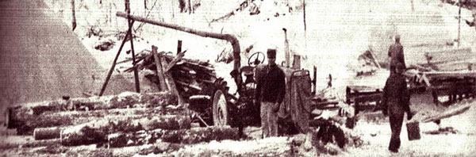
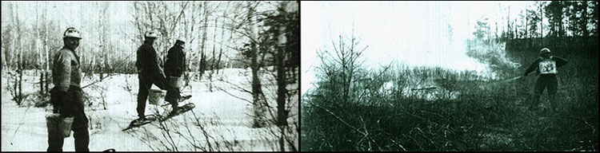

When Shona (my wife) and I decided to return to the land, we knew it would be tough sledding for a while ... because no matter how much of your own food and other essentials of life you produce yourself, you're still going to need some cash. Unless things have changed recently, the County Auditor doesn't accept bushels of pumpkins to settle real-estate taxes.
I think this very question-how to have a cash income without being caught up in the 9-5 routine of a city job-is the one hang-up that most often prevents people from going back to the land. In my experience, at least, this is the main worry that usually comes out in any discussion of the subject.
My own solution was to start hunting up part-time jobs, always stipulating that-if possible-they had to be outdoor- and nature-oriented. The list of things I've done to make money over the years is varied, interesting and probably adaptable to any part of the country.
To begin with let's take my favorite part-time employer ... the Minnesota State Forestry Service, which has furnished Shona and me with a lot of well-paying short-term work. I started with the agency as a towerman in the local lookout. My job was spotting and calling in smokes. I then transferred to the ground as a smokechaser, and Shona took my place in the tower.
When the danger of fire subsided that first year I was hired to help with local reforestation projects, both county and state ... and from there went on into custom tree planting for private individuals. After I'd set out a considerable number of seedlings for one man who owned a large amount of land, he hired me to build several miles of nature trails that wound scenically over his property. I then accepted a seven-months-a-year position with the state as Forest Officer and began fitting the tree planting and trail building into my spare time.
That schedule worked out quite well. I wasn't burdened with or harnessed by a full-time career-type job and I had plenty of time for my homestead chores: gardening and collecting roots, driftwood and insects for sale.
If you don't want to get involved that deeply working for the government, it will still pay you to check out the local ranger station anyway. Minnesota's State Forestry Service hires smokechasers and standby firefighters on a daily basis, especially during times of high fire danger. Or, if you should see the smoke of a blaze near you, go to the scene and check with the man in charge ... help is always needed, and you may be hired.
Another tip: All the divisions of my state's Department of Natural Resources are allocated funds for various projects such as campground construction, forest development, etc. The bureaus sometimes use their own personnel for this work but generally hire laborers to help.
When you're job hunting, don't neglect your region's specialties. Every part of the country has some economic factor which furnishes part-time work. In our area, that business is summer recreation. The county in which I live-alone-has over 600 lakes, and just about every one is bordered with resorts and vacation homes.
The larger resorts hire men to do general yard work and take care of the boats, bait, etc. Women, too, are employed as waitresses and to clean cabins. The work is short-term-three months or so in the summer-but generally pays well.
You can also make pretty good wages up here by taking care of four or five summer homes every year. You'll be required to keep up the lawn, put out and take in the boats and docks and do minor repairs and maintenance on the buildings. The season for this work-at least in Minnesota-lasts from May to October and offers steady part-time employment. I've found that it's best to furnish your own tools and equipment and charge a flat rate that includes depreciation. For example, if you decide to ask $2.50 per hour, add on an extra 50 cents for the articles you supply. You can usually get by with a good lawn mower, your garden tools, general carpentry items and a chain saw (or, lacking that, a sturdy bow saw).
In return for a minimum amount of care you can generally expect to realize at least $100 per cabin per year and often more-doing this caretaking. I've found that four or five homes will keep you quite busy in your spare time, but you could handle quite a few more working full time with better equipment.
Besides predictable opportunities like the ones I've already mentioned, there are unforeseen windfalls. Just being in the right place at the right time can lead to unexpected jobs.
One day, for example, when I walked down to get the mail, I started visiting with our deliveryman. During the talk he asked me if I had any free time during the winter, and whether I'd be interested in acting as his substitute. I jumped at the chance, and worked whenever he was sick or on vacation. Later I turned the job over to Shona, who still serves as a stand-in rural carrier. The position pays well and furnishes us with enough money to pay for our transportation (a decent sedan and a four-wheel-drive Bronco).
To qualify as a substitute rural mail carrier, you must have a good vehicle (Shona's route is 73 miles long, with 400 stops), be dependable and available whenever the regular deliveryman needs you. Its great advantage for Shona is that she can earn as much working four days per month-an average of one day a week-as she'd previously gained from full-time employment ... and still have much more time for the children and her own interests.
Other work, too, has turned up in odd places and at odd times. While I was running a trapline one winter I crossed paths with one particular fellow on a number of occasions. Finally, on a day when I must have looked particularly hungry, he offered me a job. The man had purchased 80 acres of timber from the county, and when trapping was over he intended to start logging the trees. He couldn't pay me cash until the logs were cut and skidded to the mill, he explained ... but if I was interested in helping him he'd give me half a beef, to be worked out at the equivalent rate of $1.00 an hour. This would mean that I'd owe him roughly 150 hours.
I accepted and-as it turned outworked the entire winter for the new logger. In the beginning I brushed skid trails and limbed felled trees with an axe. Then, after the mill was set up, I continued as tail sawyer at the rate of $2.50 per thousand feet of sawed timber. We cut, skidded and sawed 125,000 feet of lumber that winter, and the money I earned (along with the beef, which I still like to think I ate all by myself just to maintain my strength) carried us through the cold weather in good shape.
The above story, by the way, is really an example of how you can get the things you need if you're willing to trade your labor for them. If you go into a winter and find yourself short of feed for your stock or food for your family, go to a neighboring farmer and offer to help with his chores, wood cutting, fence building or other work in exchange for hay or oats or whatever else your family needs. He'll be more likely to hire you in this way than to pay you cash ... at least if he's a good old everyday dirt farmer and not of the new "gentleman" breed.
Once your neighbors know you're willing to work, they'll come looking for you when they need a hand. Chores tie a farmer down and once in a while when he has to leave his place for a few days-usually out of necessity-he likes to have someone he ran count on to do his routine work.
It's often a good idea to volunteer assistance, too. Many times I've offered to help a neighbor butcher, just so I could learn and get the experience I needed to do the job myself ... and, even though I didn't expect it, I always came home with an armload of fresh meat.
This swapping of labor for products can also work for you, but the other way around. If you've purchased a farm that has good hayland and you lack the necessary harvesting equipment, contact a neighbor and ask if he'll put your crop up "on shares". This simply means that you furnish the hay, he furnishes the machinery and you each take half the yield. Store your portion, using or keeping what you need, and sell your surplus in the late winter when baled hay brings its best price.
Whether the payment is money or goods, part-time work is available al most everywhere. The jobs just take ferreting out. I hope the few examples I've mentioned will be of help.
I've always tried everything that was offered me, so that I could find what I liked to do ... and I've always looked for a variety of jobs so that I would never become dependent on a single type of work for an income. In this way, if one source dried up there were always others to keep me going.
You won't get rich working at odd jobs, but I've always kept in mind the fact that becoming wealthy wasn't my purpose anyway. I needed the cash, true ... but most of all I needed the experience and knowledge I've received from the variety of positions I've held. Also, I've deliberately gone easy on part-time work so I could concentrate on wildcrafting ... the making of money from products gathered from wild land. To my mind, that's the most interesting endeavor of all.
Or, as the fellow who used to live along the Avon said: "Poor and content is rich, and rich enough."
|
 |
 |
|